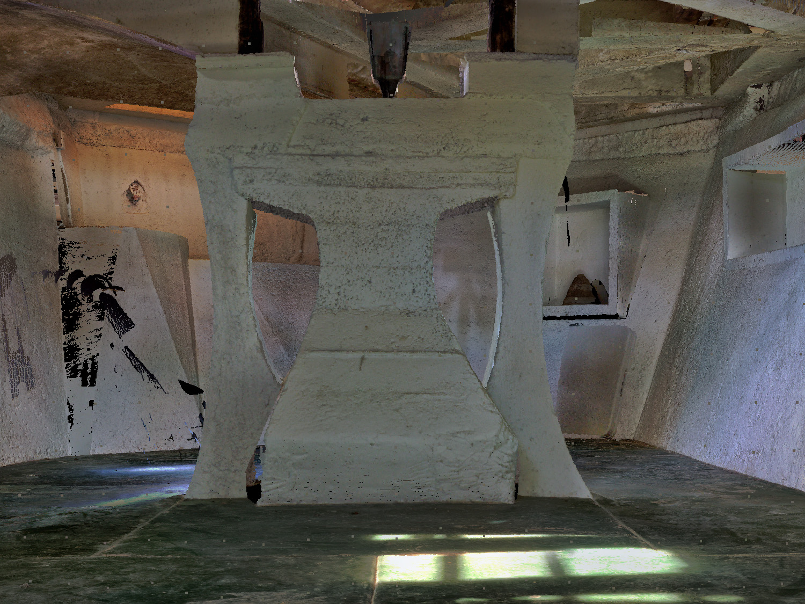

Cosanti, located in Paradise Valley, Arizona, served as Paolo Soleri's primary residence, studio, and the initial proving ground for many of his arcological principles from the mid-1950s onward. The name "Cosanti" is derived from Italian, meaning "against things" or "against materialism," reflecting Soleri's ethos of frugality and rejection of excessive consumption. This intimate five-acre site showcases Soleri's innovative earth-casting construction technique, where concrete is poured over meticulously shaped earth mounds, which are then excavated to reveal unique, organic forms that are often partially subterranean, utilizing the earth for natural insulation. Cosanti is characterized by its terraced landscaping, semi-underground structures, and sculptural elements, including the famous bronze and ceramic wind-bells produced on-site, which help fund the Cosanti Foundation's work.
Current State and Ownership: Cosanti is owned and operated by the Cosanti Foundation. It remains an active hub for the production of Soleri wind-bells, an educational center, and a public visitor destination. Visitors can tour the grounds, observe the bell-making process, and experience firsthand the early architectural experiments that laid the groundwork for the more ambitious Arcosanti project. It serves as the spiritual and administrative headquarters of the Cosanti Foundation, continuing Soleri's legacy of integrating architecture, ecology, and craftsmanship.